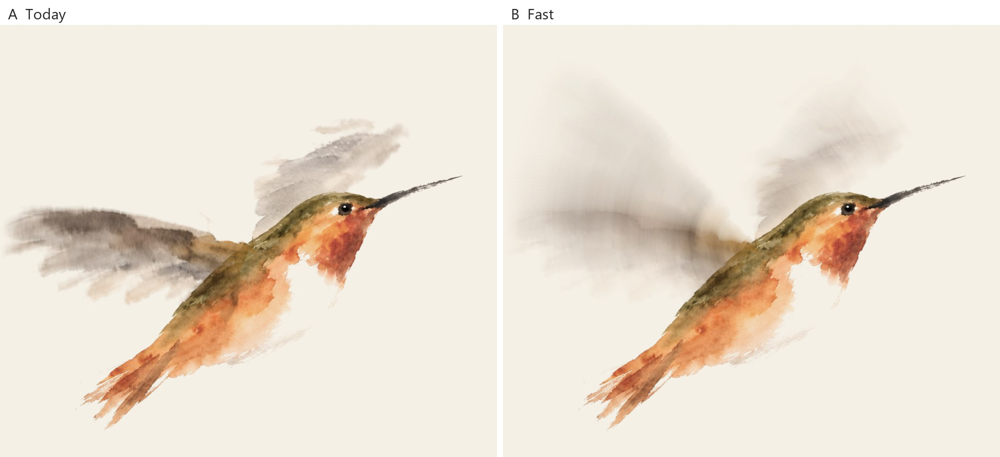
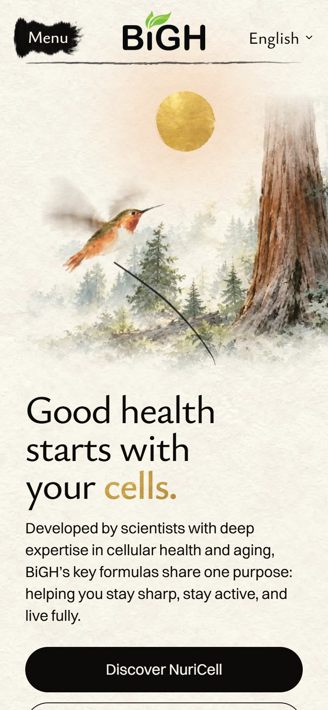

<title>Hummingbird Wing Speed</title>
<meta name="claude:viewport-fit-sides" content="cover">
<link rel="preconnect" href="https://fonts.googleapis.com">
<link rel="preconnect" href="https://fonts.gstatic.com" crossorigin>
<link rel="stylesheet" href="https://fonts.googleapis.com/css2?family=Ysabeau+Office:wght@500;600&family=Inter:wght@400;500&display=swap">
<style>
  /* One column, read top to bottom on a phone: the answer, the real-speed film, slow motion, stills, the score. */
  :root {
    --paper: #f6f2ea;
    --ink: #1d1b18;
    --muted: #5f5a52;
    --rule: #ddd5c6;
    --card: #fffdf8;
    --gold: #a8842f;
    --display: "Ysabeau Office", "Ysabeau", Georgia, serif;
    --body: "Inter", system-ui, -apple-system, "Segoe UI", sans-serif;
  }
  @media (prefers-color-scheme: dark) {
    :root:not([data-theme="light"]) {
      --paper: #1b1a17; --ink: #efe9dd; --muted: #b3ab9c; --rule: #3a362f; --card: #24221e; --gold: #d2ad55;
      color-scheme: dark;
    }
  }
  :root[data-theme="dark"] {
    --paper: #1b1a17; --ink: #efe9dd; --muted: #b3ab9c; --rule: #3a362f; --card: #24221e; --gold: #d2ad55;
    color-scheme: dark;
  }
  body { background: var(--paper); color: var(--ink); font: 400 17px/1.55 var(--body); }
  main {
    max-width: 760px;
    margin: 0 auto;
    padding-block: 32px 64px;
    padding-left: max(16px, env(safe-area-inset-left, 0px));
    padding-right: max(16px, env(safe-area-inset-right, 0px));
    display: grid;
    gap: 36px;
  }
  h1, h2 { font-family: var(--display); font-weight: 600; text-wrap: balance; margin: 0; }
  h1 { font-size: clamp(30px, 6vw, 42px); line-height: 1.1; }
  h2 { font-size: 23px; line-height: 1.2; }
  p { margin: 0; max-width: 62ch; }
  ul { margin: 0; padding-left: 1.2em; display: grid; gap: 6px; }
  .lead { font-size: 19px; }
  .muted { color: var(--muted); font-size: 15px; }
  section { display: grid; gap: 12px; }
  figure { margin: 0; display: grid; gap: 8px; }
  video, img {
    width: 100%; max-width: 100%; height: auto; display: block;
    border: 1px solid var(--rule); border-radius: 6px; background: #f5f0e6;
  }
  .phone img { max-width: 300px; }
  figcaption { color: var(--muted); font-size: 15px; }
  .score {
    background: var(--card); border: 1px solid var(--rule); border-radius: 8px;
    padding: 16px 18px; display: grid; gap: 8px;
  }
  .score strong { color: var(--gold); font-family: var(--display); font-size: 22px; }
</style>

<main>
  <header style="display:grid;gap:12px">
    <h1>The hummingbird's wings, now a blur</h1>
    <p class="lead">The wings now move so fast you can barely see them: a pale, shimmering fan, like a real hummingbird. Then they settle, raised as painted.</p>
  </header>

  <section>
    <h2>What changed</h2>
    <ul>
      <li>Before: 10 clear flaps a second, then slowing to about 4. You could follow each flap, like a butterfly.</li>
      <li>Now: a real hummingbird beats about 40 to 50 times a second. No screen can show that, so the eye just sees a haze where the wing sweeps. B paints that haze.</li>
      <li>The haze shimmers 60 times a second for 3 seconds as the bird arrives. Then it folds into the raised wings and rests.</li>
      <li>The slow flaps at the end are gone. They were the most butterfly-like part.</li>
    </ul>
  </section>

  <section>
    <h2>Real speed, as on the homepage</h2>
    <figure>
      <video src="arrive.mp4" autoplay muted loop playsinline></video>
      <figcaption>A is the live site today. B is the fix. Both rest after about 3 seconds.</figcaption>
    </figure>
  </section>

  <section>
    <h2>Slowed down eight times</h2>
    <figure>
      <video src="slow.mp4" autoplay muted loop playsinline></video>
      <figcaption>Only to show the frames. In A each frame is one clear wing. In B each frame is already a blur of most of a wingbeat.</figcaption>
    </figure>
  </section>

  <section>
    <h2>One moment, paused</h2>
    <figure>
      
      <figcaption>A: one wing you can follow. B: a pale fan, the way a camera catches a hovering hummingbird.</figcaption>
    </figure>
  </section>

  <section class="phone">
    <h2>On a phone</h2>
    <figure>
      
      <figcaption>The first screen, paused mid-blur.</figcaption>
    </figure>
  </section>

  <section class="score">
    <strong>My score: 8.5 / 10</strong>
    <p>It reads as a hummingbird now, not a butterfly. What holds it back:</p>
    <ul>
      <li>Up close, the blur has faint curved streaks from the painted feathers. At the page's size you hardly see them.</li>
      <li>The wing pictures are heavier: 388 KB, up from 226 KB, so they may appear a moment later on a slow phone.</li>
    </ul>
    <p class="muted">Checked on the built homepage: the wing changes about 58 times a second for 3 seconds, then rests. The films are made from those same frames. Nothing is live yet.</p>
  </section>
</main>
